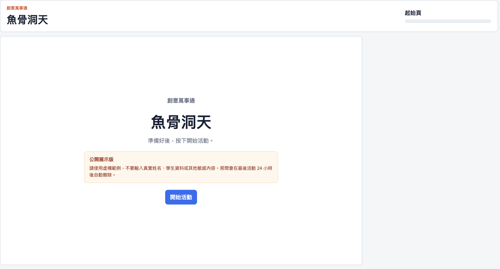
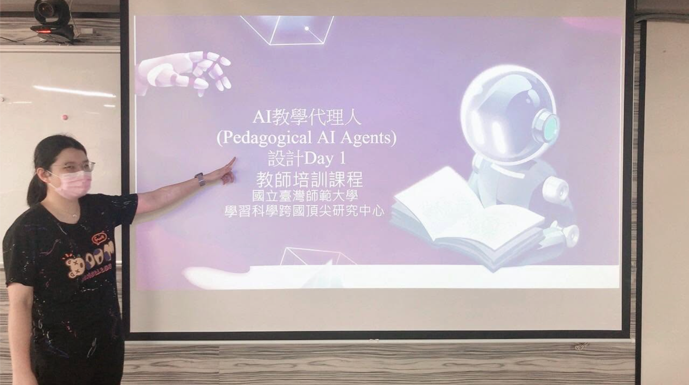

規劃與執行教學活動
具備教育活動規劃、執行與教師培訓經驗，曾參與幼兒園教學實驗、系統操作示範及教師工作坊，協助將教學需求轉化為可實際執行的活動流程與內容，並透過示範與引導協助教師理解及應用相關工具。亦曾運用生成式 AI 與數位工具協助設計教學活動及活動網頁。
Personal Portfolio
研究 × 教育 × AI × 數位專案
具近三年研究計畫與專案執行經驗，做事細心、認真負責，具備資料整理與分析、專案協調、系統測試、教育活動規劃及生成式 AI 工具應用能力。曾參與教師培訓、幼兒園教學實驗、APK 與網頁平台測試，並運用 AI 工具協助活動設計與數位網頁製作。

把複雜的事整理清楚，把想法落實成可執行的成果。
CLARITY → ACTION → OUTCOME01 / About
具近三年研究計畫與專案執行經驗，工作內容橫跨研究、教育活動、教師培訓、系統測試、AI 工具應用及數位活動製作。
我擅長整理資訊、釐清需求，並將較抽象的想法轉化為實際可執行的活動流程、系統需求、文件或數位成果。
02 / Expertise
以研究與教育為基礎，結合專案執行、需求驗證與 AI 工具應用。
具備教育活動規劃、執行與教師培訓經驗，曾參與幼兒園教學實驗、系統操作示範及教師工作坊，協助將教學需求轉化為可實際執行的活動流程與內容，並透過示範與引導協助教師理解及應用相關工具。亦曾運用生成式 AI 與數位工具協助設計教學活動及活動網頁。
具備研究計畫與專案執行經驗，能依工作需求整理任務、協調團隊成員與相關資源，並配合時程完成資料彙整、會議安排、活動執行、問卷分析及成果整理。
具備系統與應用程式測試經驗，曾協助測試 APK 及網頁平台功能，依使用需求與操作流程進行功能驗證、問題確認與回饋整理，並製作 Testing Reports。
具備生成式 AI 工具應用經驗，能運用 LLM 與提示設計協助內容整理、活動規劃、流程設計及數位網頁製作，並依實際需求調整提示內容與使用方式。
具備研究計畫資料整理與報告撰寫經驗，能進行資料蒐集、彙整、問卷整理與分析，並協助撰寫研究報告、成果文件及相關計畫資料。
能依教學或專案需求整理活動流程與功能需求，運用 AI 工具協助將活動概念轉化為可操作的網頁，並參與 UI 調整、使用者測試、功能測試與後續優化。
03 / Experience
近三年研究計畫與專案執行經驗，串連研究現場、教學需求與數位工具。
從資料與流程的整理，到活動執行、測試驗證與成果文件，支援專案各階段的執行工作。
04 / Selected Project
結合活動設計、需求整理與實際測試，將教學概念轉化為可操作的數位成果。

魚骨洞天 / 教育活動 / AI 應用
依研究計畫與教學活動需求，將既有活動流程與內容整理後，運用生成式 AI 與 Codex 協助製作可實際操作的互動式網頁。
專案過程包含活動流程規劃、功能需求整理、介面與操作方式調整、功能測試及使用情境驗證，並依實際操作結果持續修正與優化。
05 / Teacher Training
曾參與並負責教師工作坊與 AI 教學相關培訓，包含課程內容規劃、教材準備、系統操作示範及實際授課。

06 / Tools
07 / Contact
歡迎就教育活動、研究計畫、AI 工具應用
與數位專案相關機會與我聯繫。